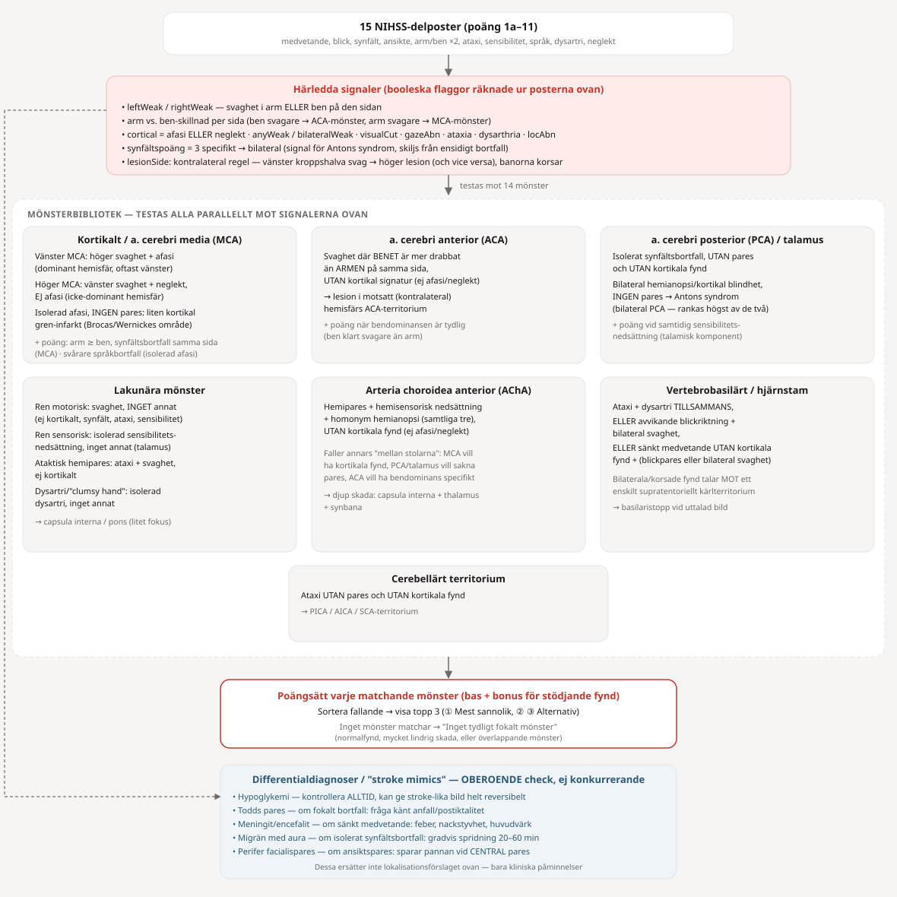

Fyll i samtliga poster. Verktyget räknar ihop totalpoäng och ger en pedagogisk gissning om troligt kärlterritorium/lokalisation utifrån mönstret av fynd — ersätter inte klinisk bedömning eller bilddiagnostik.
Klicka på en skadeplats längs synbanan (vänster eller höger sida, samma nivå 1–7 på båda sidor) — eller på en av miniatyrerna nedan — för att se resulterande synfältsbortfall på vardera ögat.
Förenklad, ISNCSCI-inspirerad skattning av neurologisk skadenivå (NLI) och ASIA impairment scale (A–E). Bygger på fyra fält (mest kaudala normala nivå per sida/modalitet) i stället för en fullständig dermatom/myotom-undersökning — använd som träningsstöd, inte som ersättning för en komplett ISNCSCI-undersökning.
Klicka en reflex för att se dess nivå markerad på kroppen (påverkar inte dina val ovan).
Förenklad skiss — inte exakta dermatomgränser. Bål och nacke kan väljas separat vänster/höger; alla 27 nivåer är klickbara även där ingen landmärkesetikett visas.
Välj ett syndrom för att se vilka banor som är skadade (rött) — dorsalsträngar (proprioception/vibration), kortikospinalbana (motorik) och spinothalamusbana (smärta/temperatur).
Välj ett system nedan. Samma diagram visar VAR i CNS-banan den korsar om till andra sidan (om alls) — det är just den nivån som avgör hur en skada lokaliseras kliniskt (t.ex. varför Brown-Séquard-syndrom ger bortfall av olika sinnen på olika sidor). Hovra över en markerad struktur för att se dess roll i den valda banan OCH vad den gör därutöver.
Hovra över en markerad struktur i diagrammet till vänster.
Riktig geometri (BodyParts3D), inklusive ett riktigt ryggmärgssnitt. Röret genom modellen är en förenklad kurva mellan strukturernas faktiska mittpunkter — inte en anatomiskt exakt fiberbana (det finns inga individuella nervrötter eller spårade fiberknippen i datasetet), men samma nivåer och sträckning som det schemat visar. Använd snitten under modellen för att se in i den.
Den här banan går huvudsakligen genom perifera ganglier utanför CNS — strukturer som inte finns i 3D-modellen. Se schemat till vänster för hela förloppet.
Välj en reflex nedan. Afferent (sensorisk) del av bågen visas i blått, efferent (motorisk) del i rött, med en röd punkt vid den nivå i ryggmärgen/hjärnstammen där reflexen faktiskt kopplas om.
Välj en reflex ovan.
Samma teknik som Nervbanor — en förenklad kurva mellan strukturernas faktiska mittpunkter, inte spårade enskilda nervrötter.
Ingen ben-/muskelanatomi i modellen — nerven och muskeln nedanför/utanför den synliga geometrin är schematiskt ritade, inte anatomiskt korrekta positioner.
Ett separat, mer detaljerat läge -- samma källbibliotek som huvudmodellen, men med enskilda kärnor/strukturer synliga var för sig i stället för hopslagna till en enda talamus-/hjärnstamsyta. Välj en struktur i listan till höger för att lysa upp den (röd, opak) mot en blek cortex-siluett som referens. Ingen klippning/snittning här -- rotera och zooma för att se runt.
Detta är en pedagogisk tumregelsmotor, inte en validerad diagnostisk algoritm och inte en ersättning för bilddiagnostik. Den bygger på klassiska, läroboksmässiga samband mellan kliniska fynd och kärlterritorium/lesionsnivå, för att öva mönsterigenkänning — riktig stroke presenterar sig ofta med överlappande eller ofullständiga mönster.

Streckad linje = den parallella, oberoende differentialdiagnos-checken (påverkar inte poängsättningen ovan).
Många verkliga stroke passar inte snyggt i en enda kategori — blandade eller ofullständiga mönster är vanliga. Verktyget känner inte till tid sedan insjuknande, tidigare bortfall, eller fynd utanför NIHSS-skalan (t.ex. specifika kranialnervsfynd). Använd det för att träna resonemang, inte som facit.